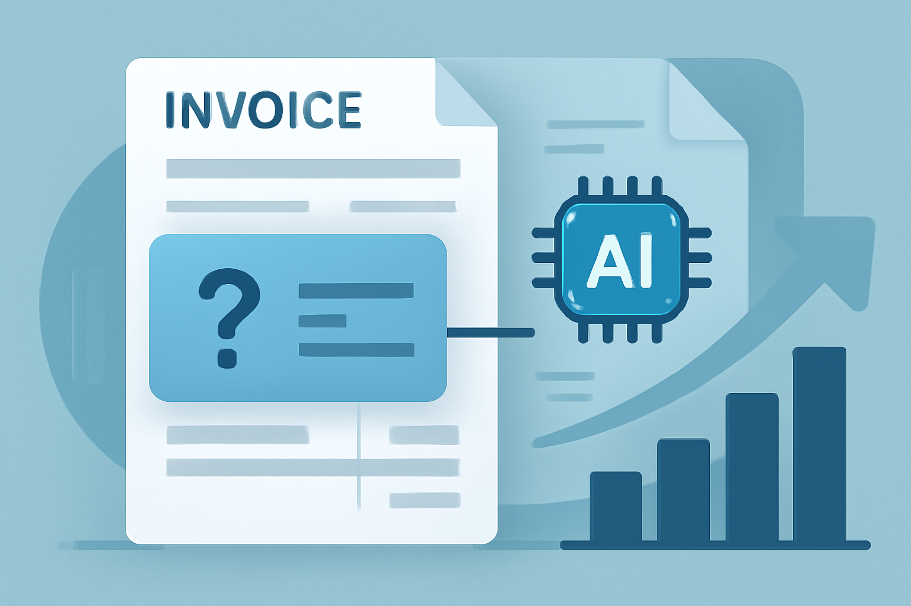

03 Hugging Face
인보이스 항목 추출에 맞춘 문서 QA
cc-by-nc-sa-4.0 법무 확인공개일 03.25

문서 질의응답은 일반 문서용과 서식 특화형이 갈린다. 금융IT 현장에서는 청구서와 거래 문서처럼 필드가 정해진 자료가 많다. 이 후보는 그중 인보이스 처리에 초점을 맞췄다. 일반 이해용 데이터도 함께 써서 범용성을 일부 보완했다.
무엇을 하는 모델인가
이 모델은 청구서와 다른 문서에서 질문 답을 뽑는 문서 질의응답 모델이다. 청구서용 데이터와 SQuAD2.0, DocVQA로 파인튜닝했다. 카드 설명은 떨어져 있는 여러 토큰도 한 답으로 고를 수 있다고 적었다. 인보이스 주소처럼 긴 필드를 찾는 업무를 겨냥한다.
크기와 필요한 장비
- 파라미터 수는 카드에 밝히지 않았다.
- safetensors 형식을 제공한다.
- 카드는 양자화본이나 다른 형식을 밝히지 않았다.
- 카드는 필요한 메모리를 밝히지 않았다.
- 카드에는 DocQuery로 쓰는 방법을 권했다.
라이선스와 사내 반입
- 카드에 라이선스 조건을 밝히지 않았다.
- 상업 이용 가능 여부는 확인 필요다.
- 접근 승인 필요 여부는 카드에 없다.
- 재배포와 파생물 배포 조건도 확인 필요다.
한국어와 다국어
요약 태그에는 영어만 적혀 있다. 카드는 지원 언어를 따로 설명하지 않았다. 한국어 성능이나 한국어 예시도 없다.
무엇으로 검증했나
카드는 평가 결과를 밝히지 않았다.
언제 이것을 고르나
청구서 필드 추출이 우선이면 impira/layoutlm-document-qa보다 이 후보가 더 맞을 수 있다. 문서 전반의 범용 질의응답이 먼저면 impira/layoutlm-document-qa가 출발점이 된다. naver-clova-ix/donut-base-finetuned-docvqa처럼 OCR을 줄이는 방향이 필요한 조직에는 맞지 않을 수 있다. 이 후보도 라이선스 조건이 비어 있으므로 반입 전 확인이 필요하다.
주요 용어
토큰(Token): 모델이 글자를 잘게 나눠 처리하는 단위 비연속 토큰(Non-consecutive tokens): 문서에서 붙어 있지 않은 여러 조각을 한 답으로 고르는 방식 DocQuery: 문서 질의응답 모델을 다루는 도구·프로젝트 이름 인보이스(Invoice): 거래 대금과 항목을 적은 청구 문서
원문 정보
제목: impira/layoutlm-invoices
공개일: 2023.03.25